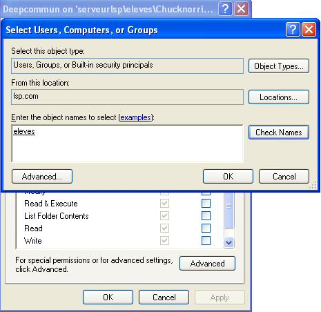
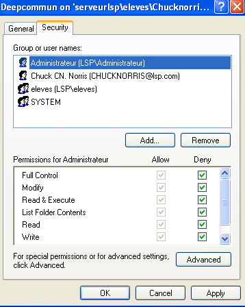

Comment installer le Deepcommun
Etape 1: Connectez vous.

Pas très compliqué je pense :p
Etape 2: Téléchargé le fichier "setup V.x.x.x.xx.zip" ici

Noubliez pas de le supprimer après l'installation.
Etape 3: Instalation (Partie 1)
Dézipper "setup.zip" dans vos documents

Etape 4: Instalation (Partie 2)
Démmarez setup_.exe

Etape 5: Instalation (Partie 3)
Suivez les instructions de la fenêtre "cmd.exe"

Etape 6: Instalation (Partie 4)
Choisissez le lieu d'installation
Notez bien le lieux de décompression
Etape 7: Initialisation (Partie 1)
Crée un lecteur réseau vers le chemin d'installations choisies précédemment.
Copier le chemin d'accès quelque part on en aura besoin plus tard.
Etape 8: Initialisation (Partie 2)
Cliquez sur "Propriétées"
Etape 8: Initialisation (Partie 3)
Allez sur l'onglet "Sécurités" afin d'autoriser l'accès cliqué sur "Ajouter".
Etape 8: Initialisation (Partie 4)
Ajouter le groupe ("eleves" pour la plupart) ou les noms des utilisateurs. Puis cliquez sur "Ok"

Etape 8: Initialisation (Partie 5)
"Bloquer" l'accès à l'administrateur et laissez le reste comme tel.

Oui bloquer est entre "" cars l'administrateur à l'accès hiérarchique vu qu'il a accès au fichier au-dessus il aura toujours accès au fichier.
Mais bon, ça donne bonne conscience. ^^
Etape 9: Instalation (Partie 5)
Fermer la page et allez sur le lecteur reseau ouvert précedement.
| Swano Corp 2015 -- Tous droits réservés Swano corp -- En navigant sur le site vous acceptez les conditions d'utilisation |
|---|